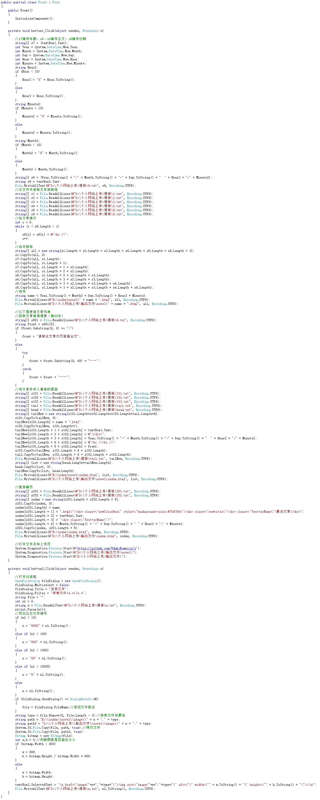
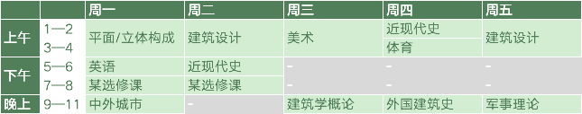

增加了上传图片的功能！
2019-2-23 23:49
今天晚上给发表文章的小程序增加了上传图片的功能！所以今天这篇文章主要就是简单介绍一下小程序整体的大致思路了w不过这边也基本没怎么接触过编程相关的内容，而且也没打算把程序写得很好，所以很多地方的实现方式都很简单粗暴，大家看个笑话就好了w整个程序的流程大致如下：
1.程序界面有2个TextBox以及2个Button，其中TextBox1用于写标题，TextBox2用于写正文部分，Button1用于发表文章，Button2用于插入图片；
2.我们事先写好了html网页的模板，我们将其存在了一个本地的txt文件当中，我们现在将其读取进一个数组，当我们写完文章，按下按钮1发布文章之后，我们在模板当中的相应位置插入TextBox1和TextBox2（标题和正文）的内容，并且在换行的地方加入html的换行符来使之在html当中保持段落格式。此外我们将读取发布当时的时间日期，将其反应在页面的发布时间上，并作为文件名，最终将成果保存成html的文章页面文件，保存到网站的相应位置。
3.接下来我们需要更新文章列表。我们也事先将文章列表存在txt文件当中。发布文章之后，我们从文章的第一段截取50个字作为文章的前情提要，如果文章开头为图像或者特殊内容，我们直接将前情提要显示为“请前往文章内页查看全文”，以防止未转义的html内容破坏这个页面的结构。我们将文章标题、日期、前情提要、页面链接插入到文章列表页面的相应位置，事先更新到txt模板中，以便下一次取用模板时会保留以前发布的文章，最终将这个页面保存为正式的html文件。我们也用类似的方法更新首页的“最新文章”栏目。
4.我们用button2的按钮插入文章。按下按钮之后先会打开选择图像对话框，我们选择需要插入的图象。选择后，这个图象会被复制到网站文件夹当中，并且将其重命名为按顺序对图象进行的编号。同时编辑器会直接在光标所在位置插入图象的html代码，之后会直接跟着文章保存到html页面当中。这之中感谢ZRY桑教我.SelectedText这个方法w
5.最终按下按钮，文章将会被发布。本来是想研究一下git的命令行，然后实现按下按钮之后程序自己启动git帮我上传，但是现在因为暂时没有去研究git，所以目前程序会帮我们打开github的网站页面以及本地网页所在文件夹，让我们自助上传页面，实现了半自动文章上传功能（
最后附上整个小程序的内容：

{kind=link}
对了，附上这学期的课表，欢迎趁我没事的时候来找我玩呀~比如雀魂友人场啥的（bushi

{kind=link}
Copyright©2011-
卯月.All rights reversed.
禁无断转载
禁无断转载